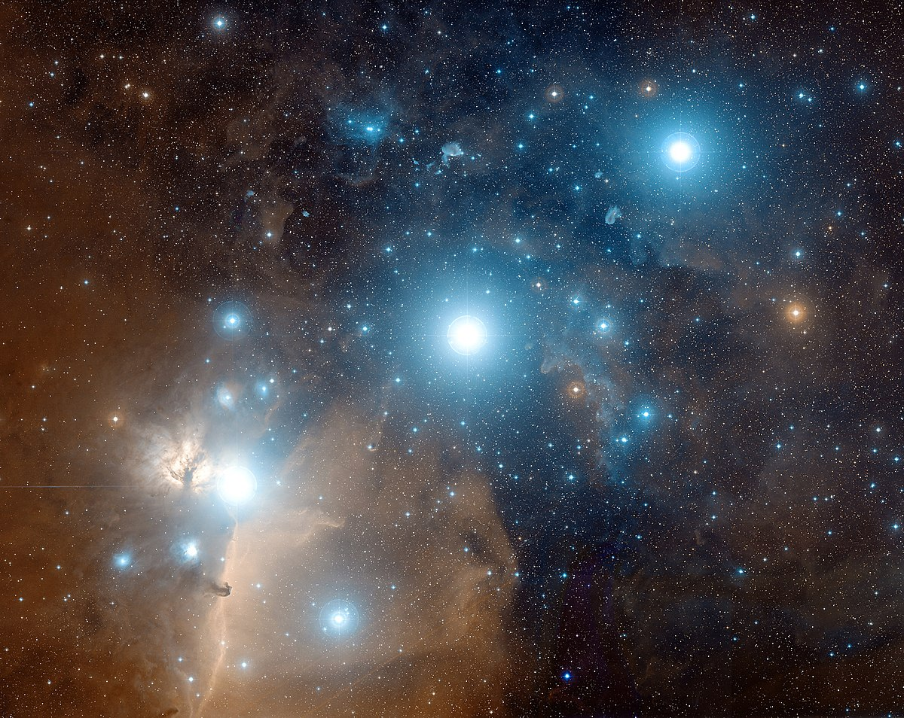

Orion's Belt
Orion's belt is one of the most noticeable asterisms in the night sky. It is defined by the three bright stars cutting through the middle--the "waist"--of the Orion constellation. They serve as a good starting point for one to get oriented with the night sky. Bruce McClure from EarthSky writes,
See the three stars at the mid-section of the constellation Orion the Hunter? These stars are very noticeable and famous in many cultures as Orion’s Belt. But – to the Aymara people of Bolivia, Peru and Chile – they represent a Celestial Bridge. And there’s good reason for that. Orion’s Belt – the Celestial Bridge – links the northern and southern hemispheres of the sky.
Consider the westernmost star of Orion’s Belt, called Mintaka. This star sits almost directly astride the celestial equator: the projection of Earth’s equator onto the stellar sphere.
Where can you find Mintaka and the constellation Orion? In late November, from around the world, Orion rises into your eastern sky around 9 p.m. and climbs highest up for the night around 1 to 2 a.m. local time (the time on your clock no matter where you are on the globe).
When dawn is breaking, or about to break, say around 5 to 6 a.m., the Hunter sits low in your western sky.
Bruce McClure, Orion’s Belt – a Celestial Bridge – links northern and southern skies